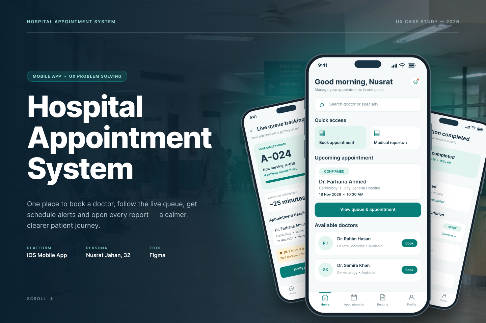
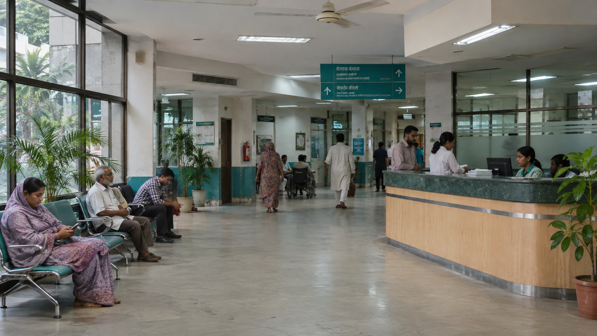
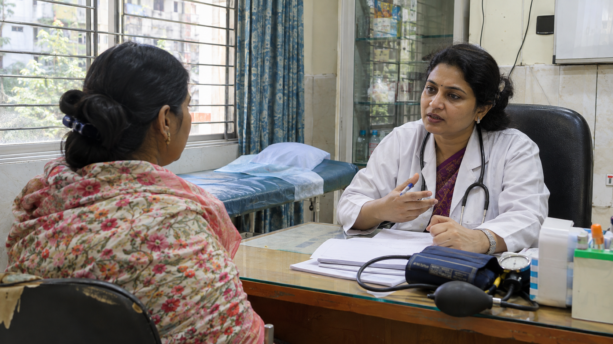
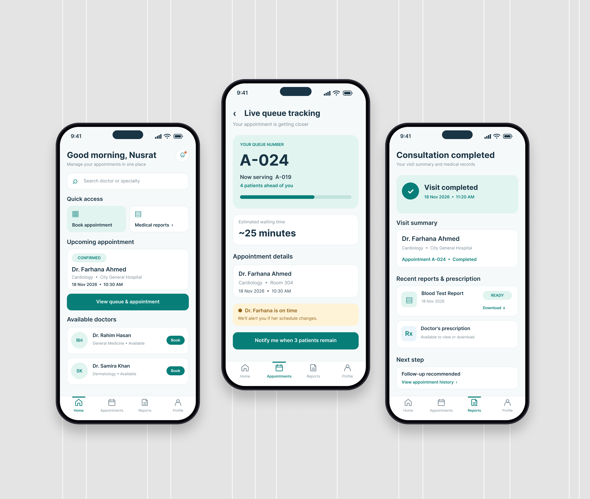

Hospital Appointment System

A stressful visit, rethought as one calm journey
Patients juggle unclear doctor availability, unexpected delays, schedule changes and scattered medical records. This project explores a single hospital appointment app that brings booking, live queue updates, schedule alerts and report access together.
UX Problem Solving Challenge
Healthcare · Appointment management
UX investigation, solution strategy, user flow, 3 mobile screens
iOS mobile app
Persona and outcomes are assumption-based and meant to be validated with real patients.
Five pain points that make
every hospital visit harder

- 01Doctor availability is unclear when booking.
- 02No reliable live queue or estimated waiting time.
- 03Doctor schedule changes are not communicated promptly.
- 04Medical reports are scattered and difficult to access.
- 05Previous appointments and follow-up details are hard to find.
Nusrat Jahan
Age 32 • Corporate Executive
One app for the whole
appointment journey

Patients need a way to manage their hospital appointment journey in one place because unclear doctor availability, waiting times and scattered reports make visits stressful.
MAIN IDEA
A unified hospital appointment app for booking, queue updates, schedule alerts and medical report access.
5 KEY FEATURES
WHY THIS SOLUTION WILL WORK
It brings essential visit information together, improves transparency around delays, reduces uncertainty and makes records easier to retrieve. These are expected benefits to validate with patients.
Appointment to visit tracking
One dashboard for the next step
Book appointment & medical reports shortcuts

Live Queue & Waiting Time
Ticket number, now-serving status and an estimated wait.
Visit Progress & Success
Prescription & follow-up reminder
Three moments. One connected journey.
What this solution should
change for patients
Booking, queue and reports in one app.
Live queue and wait estimates reduce guesswork.
Schedule alerts keep patients ahead of changes.
Reports and follow-ups are one tap away.
These are expected benefits and should be validated with real patients through usability testing.
Thank you for watching
Hospital Appointment System • UX Case Study • 2026